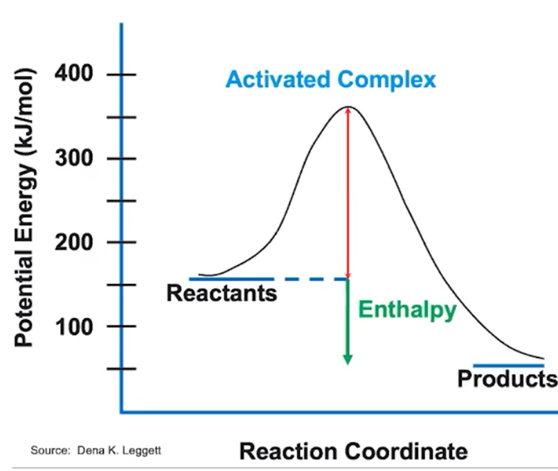
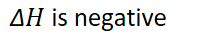
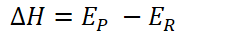
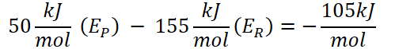
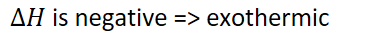
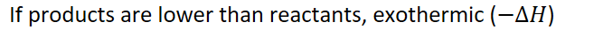

Reaction energy profile
{width="5.59375in" height="4.71875in"}
{width="6.6875in" height="0.375in"}
{width="2.2916666666666665in" height="0.3541666666666667in"}
{width="2.40625in" height="0.3333333333333333in"}
{width="5.5in" height="0.65625in"}
{width="3.9791666666666665in" height="0.3541666666666667in"}
{width="6.947916666666667in" height="0.3541666666666667in"}
Lower energy => more stable
Low => high energy = energetically unfavorable
Remember: the SURROUNDINGS are measured
When measuring heat, SURROUNDINGS are measured